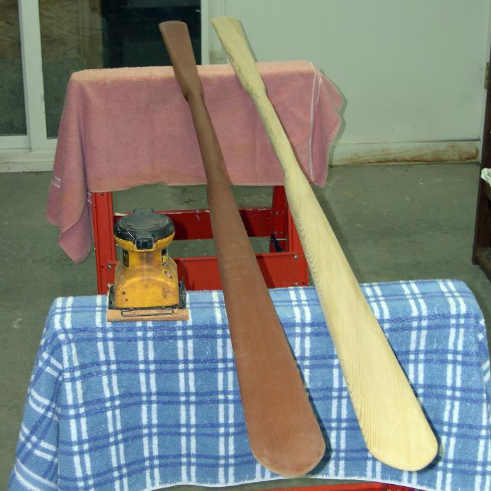

| Take-Apart Paddle Construction | Menu Last Page Next Page |
|
 The modified AP and GP palm sanding/shaping process is identical. Please refer to the Greenland paddle sanding process for details. The more pointed Aleut tip on the new paddle was created by tracing the tip of the older paddle shown onto the new paddle blank. The modified paddle tip drawings earlier in this section provide a template. The older modified AP was shaped with a block plane vs the new paddle's palm sander method. |
|